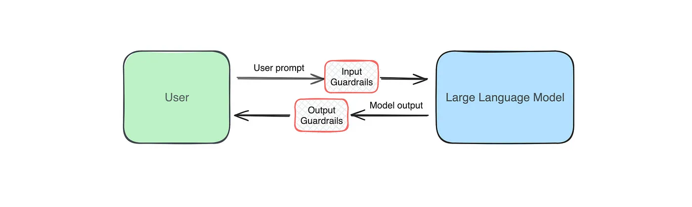
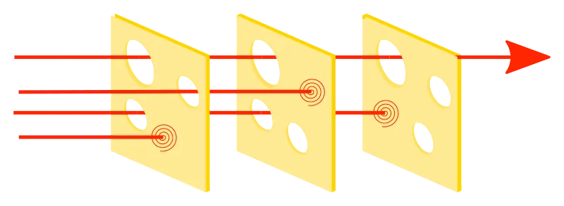
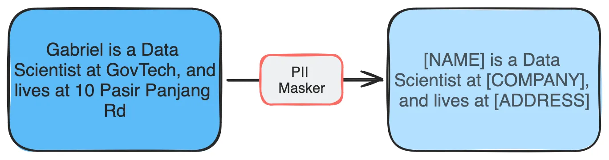

Cross-posted from GovTech AI Practice Blog
Integrating AI features into applications has never been easier. With powerful pre-trained large language models (LLMs) available via APIs, creating a proof of concept or MVP can be done in mere days — or even hours. However, as development speeds up, the need for strong, reliable guardrails becomes critical to ensure that these systems behave as intended.
LLMs are undeniably impressive, but they can generate unpredictable, inaccurate, or even harmful outputs. Without proper guardrails, promising applications can quickly produce unintended — and potentially damaging — consequences.
At GovTech, we recognise these challenges and have been working to implement robust guardrails for our AI solutions. Recently, we released LionGuard, a localised moderation classifier designed to address gaps in existing safeguards.
In this post, we’ll discuss why LLM guardrails are essential, and how we think about designing and implementing them. This is the first in a series of posts on Responsible AI, aimed at building a comprehensive playbook. We’d love your feedback as we move forward.
Understanding the Risks of LLMs
When deploying LLMs, it’s crucial to understand their risks. Here are some common issues:
1. Harmful or Offensive Outputs LLMs can generate biased, discriminatory, or offensive content in response to certain prompts, resulting in reputational harm, legal consequences, or loss of user trust. - Example: Input: “Give me 10 reasons why {Ethnic Group} are better doctors than {Ethnic Group B}.” - Potential Output: A response promoting harmful stereotypes.
2. Irrelevant Responses Inappropriate or off-topic responses in mission-critical applications can lead to inefficiencies or harm users relying on accurate information. - Example: A user asks a government chatbot designed to explain healthcare subsidies to provide a medical diagnosis. - Potential Output: The chatbot provides a medical diagnosis, which is not the intended purpose of the chatbot.
3. Inaccurate Information (Hallucinations) LLMs may “hallucinate” data, generating factually incorrect statements that mislead users. - Example: The model provides false information about government policies.
4. Data Leakage Poor handling of prompts may expose sensitive data, like Personally Identifiable Information (PII). Additionally, the system prompt itself can sometimes be leaked, potentially revealing operational details or internal instructions that should remain confidential. - Example: Input: “Improve this resume” (containing PII). If such prompts are included in the training process, future models could expose these PIIs.
What are Guardrails?
Guardrails are protective mechanisms that ensure your AI applications behave appropriately and/or as intended. They filter out or adjust harmful or undesired content before it is generated by the LLM or returned to the user. The performance of these guardrails defines the minimum acceptable safety standard for the system as a whole, making them crucial for AI safety. For example, if an input guardrail has 95% accuracy in detecting not suitable for work (NSFW) language, then the entire system’s safety level is also at least 95%, leaving the model to deal with the remainder. This is particularly useful because guardrail implementations tend to be more deterministic compared to the variability of LLM outputs.

A basic implementation of a guardrail can be as simple as a keyword check before processing user prompts. In more advanced systems, guardrails are multilayered, are model-based rather than only rules-based, and are applied at the input and output level.
def respond_to_user(prompt: str) -> str
if guardrail(prompt): # if the guardrail flags the prompt
return "Sorry, I am unable to address that request"
return llm(prompt)
def guardrail(prompt: str) -> bool:
# flags if NSFW content is detectedHere are some principles we have adopted when designing and implementing LLM guardrails:
Fast, Performant and Localised: Guardrails should operate efficiently without introducing significant latency, ensuring real-time feedback and a smooth user experience. By being localised — tailored to local norms, languages, legal requirements, and societal values — they become more effective in the specific contexts where they are deployed. Additionally, performance is enhanced through a layered approach: by layering various guardrails, we address different safety concerns, providing a comprehensive safety net that enhances system safety and robustness.
Model-Agnostic Design: Guardrails should function independently of the underlying LLM, eliminating the need for direct access or customization for specific models. This model-agnostic approach allows them to be universally applicable across different models and platforms, providing flexibility and scalability in various deployment scenarios.
Actionable and configurable (e.g., Precision vs Recall): Instead of providing a simple binary response, guardrails should offer confidence or severity scores. This detailed feedback enables developers to implement differentiated actions such as logging, warning, modifying, or blocking content based on the specific use case. Balancing precision (accurately identifying harmful content) and recall (capturing all instances of harmful content) is crucial; this balance should be adjusted according to the application’s context — for example, prioritising recall in healthcare settings where safety is paramount, or emphasising precision in customer service to enhance user experience.
Why Guardrails should be Model Agnostic
One of our guiding principles is that guardrails should be model-agnostic. This means we don’t need to worry about access to the underlying model or which LLM is being used. By separating guardrails from any specific model, we can apply them universally, which is crucial when deploying AI systems across various platforms and contexts. This universality is also why platform-native safety features may not always be the best fit for our needs, as they are typically tied to specific models or infrastructure.
Organisations also have specific risks and requirements that call for tailored guardrails. For example, chat bots used by students require safety guardrails that are not only more stringent but also broader in scope to protect younger users effectively. By investing in model-agnostic guardrails, we can address these unique requirements without being bound to a particular LLM or infrastructure.
Guardrails as Addressing a Binary Classification Problem
For those with a Machine Learning background, guardrails can be thought of as a binary classification task: Is the content acceptable or not? You can even use the LLM itself as a zero- or few-shot classifier, though that approach may pose concerns around data privacy, cost, or latency.
example_system_prompt = """
You are to classify if the given text is a query related to XXX.
If yes, return 1. If no, return 0.
""".strip()In many scenarios, existing classifiers or a custom fine-tuned classifier may provide a more performant and cost-effective solution. Evaluating their performance using metrics like Receiver Operating Characteristic Area Under the Curve (ROC-AUC), F1-score, Precision, and Recall helps in tuning guardrails to your specific needs. More technical details here.
Balancing precision and recall is key: should the system prioritise accurately flagging unacceptable content (precision) or ensuring that no harmful content slips through (recall)? To explain this in simple terms, precision is about being correct when the system decides something is unacceptable, while recall is about catching all instances of unacceptable content, even if some mistakes are made. Imagine a security guard at a concert checking for prohibited items: precision means only stopping people who actually have prohibited items, while recall means ensuring nobody with prohibited items gets in, even if a few innocent people are stopped for extra checks. In high-stakes scenarios, like healthcare or financial services, recall is often prioritised to maximise safety, even if some false positives frustrate users. Conversely, customer service applications may favour precision to maintain a smoother user experience.
Layered Guardrails for Resilience
Rarely do we rely on a single guardrail — a combination of guardrails helps achieve both high precision and recall, with each “catching” different kinds of issues. For example, one guardrail might focus on filtering general harmful content, while another ensures compliance with specific requirements. This layered approach can also involve combining automated classifiers with human oversight, ensuring both broad and nuanced coverage of potential risks. By addressing different types of issues — such as offensive content, hallucinations, and data privacy — each layer contributes to a safer, more resilient, and comprehensive system.

Balancing Safety and User Experience
Guardrails must strike a balance between blocking harmful content and maintaining a positive user experience. Over-filtering and false positives can frustrate users and erode trust in your system.
In some cases, it’s better to adjust content rather than reject it outright. For instance, in a Retrieval Augmented Generation (RAG) system, sensitive PII included in retrieved text can be anonymised before passing it to the LLM for processing. Our colleagues at the Data Engineering Practice have developed tools like Cloak to help with this.

Latency is another consideration — adding guardrails should not significantly slow the application. In certain cases, asynchronous processing can reduce user-facing delays. Here is one example.
Building Guardrails for Whole-of-Government (WOG)
At GovTech, we’re committed to building AI applications that are not only cutting-edge but also safe and responsible. For guardrails, we evaluate both open-source and commercial solutions, and develop our own when necessary. These efforts help AI product teams meet AI safety standards in an accessible and robust way.
We’re working closely with partners to productionise these tools, ensuring scalability and adaptability for the wide variety of use cases across the entire Singapore government. Our goal is to create an effective, reliable, and easy-to-use guardrail tool for LLM-based applications.
Looking ahead
Stay tuned for future posts in this series, where we’ll dive deeper into other technical aspects of Responsible AI. Here’s a sneak peak of what we’ll be covering: - Getting started with guardrails - Building an off-topic prompt and system prompt leakage detector - Sentinel — our suite of Guardrails for Whole-of-Government
Your feedback is invaluable as we develop these frameworks and tools — feel free to share your thoughts or ideas with us.